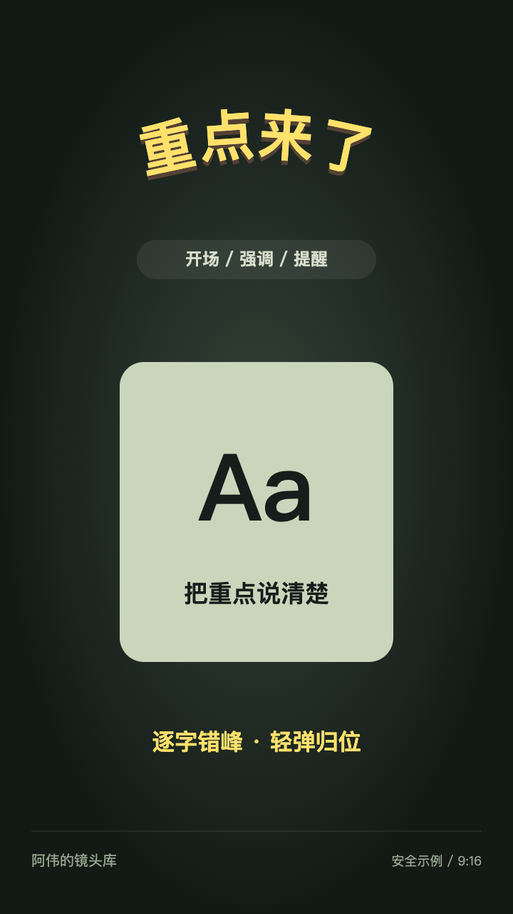
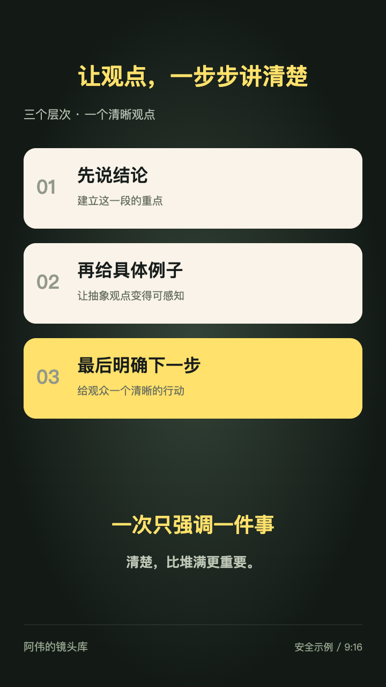

AWEI’S MOTION LIBRARY / 2026
好动效，留着下次用。
从视频里拆解镜头，把节奏、构图与动效变成可复用的组件。

002 / 标题 · 2.70 s
弧形逐字弹入 ↗
逐字错峰、轻弹归位。让开场重点先被看见。
003 / 聚焦 · 2.10 s
圆形聚焦旋环 ↗
圆形遮罩、缓慢旋环。给核心观点一个停顿。

004 / 卡片 · 6.73 s
递进高亮卡片 ↗
逐项归位、转移高亮。把分点讲解说清楚。
Float
Frame.浮 映 / 001
Frame.浮 映 / 001
001 / 照片 · 原有镜头
浮映 · 照片入场 ↓
照片完整上浮，透视归位，由虚到实。
公开演示使用安全示例，不含原始个人照片、视频与声音。
PHOTO ENTRANCE / REMOTION
轻轻浮入，清晰落定。
上浮、透视、聚焦。
把一次照片入场，调到恰到好处。
01 / 实时预览准备就绪
FLOAT / FOCUS / SETTLE
FF.视觉实验
NO. 001
NO. 001
Float
Frame.
Frame.
浮 映A SOFT ARRIVAL.
A CLEAR IMPRESSION.
A CLEAR IMPRESSION.
FULL FRAME · NO CROPF 043 / 30 FPS
0.00 s2.30 s
ANATOMY OF AN ARRIVAL
三个动作，一次入场。
01 / 上浮0.0px
02 / 聚焦0.0px
03 / 缩放1.00×
照片整体运动，始终保持原始比例。
拖动时间轴，逐帧查看每个瞬间。